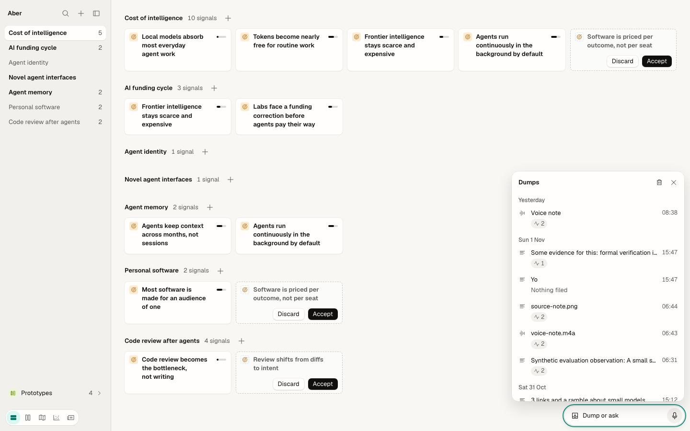
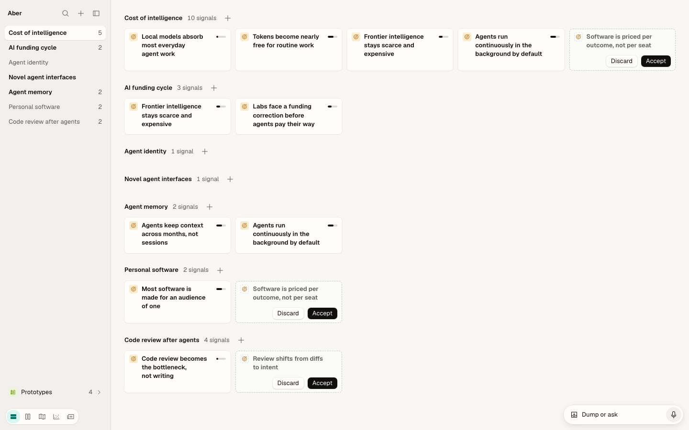
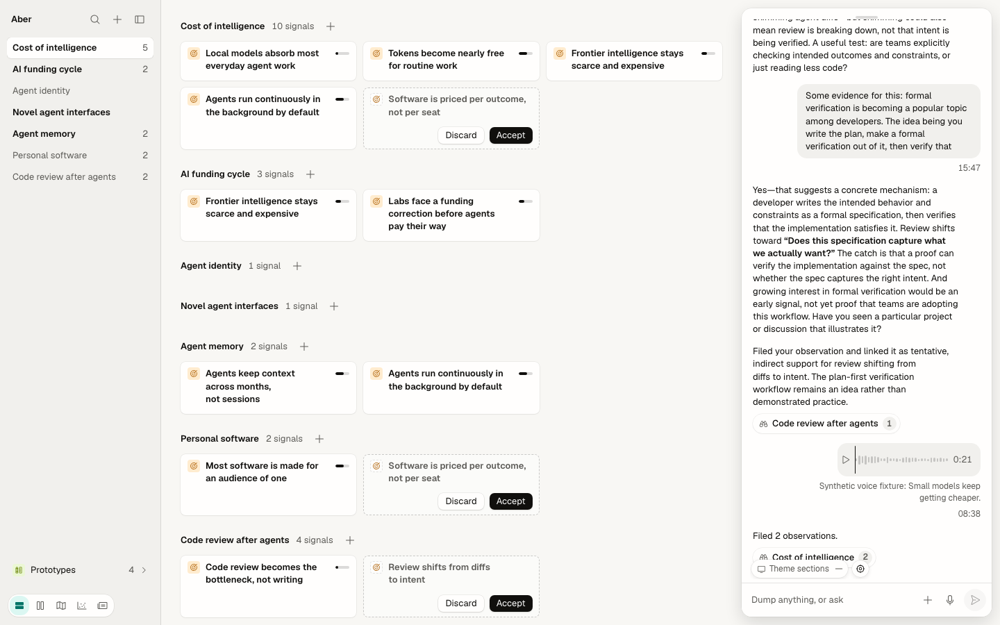
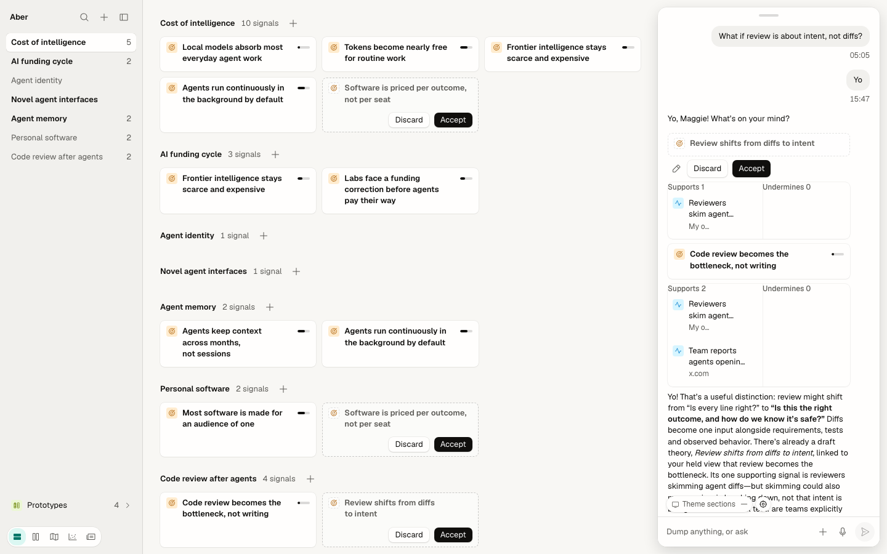
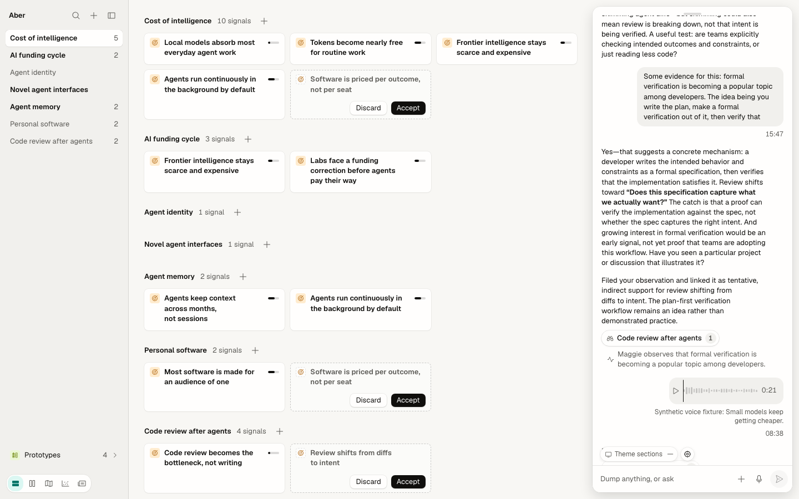
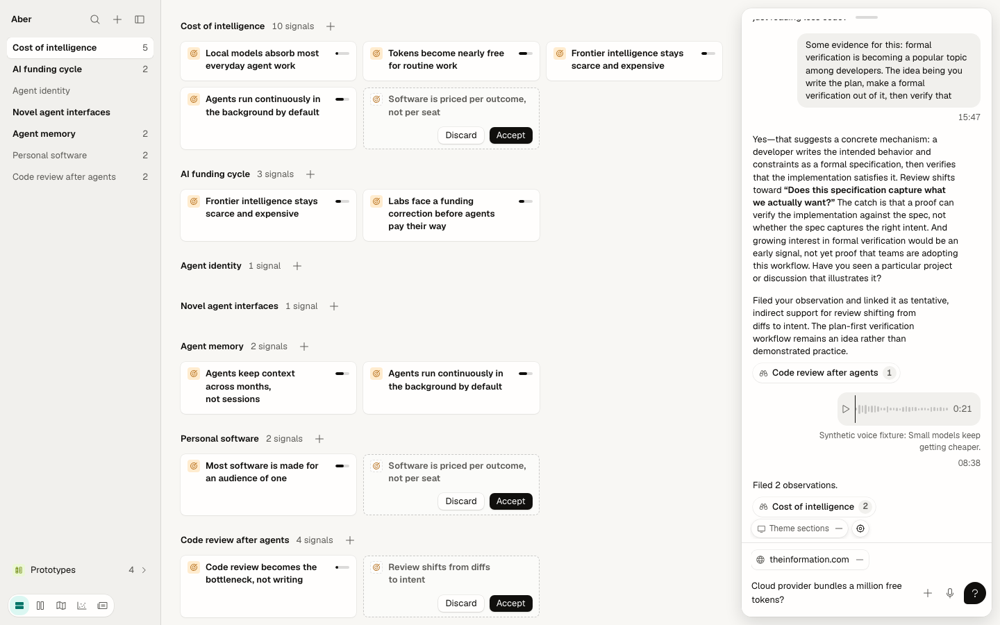
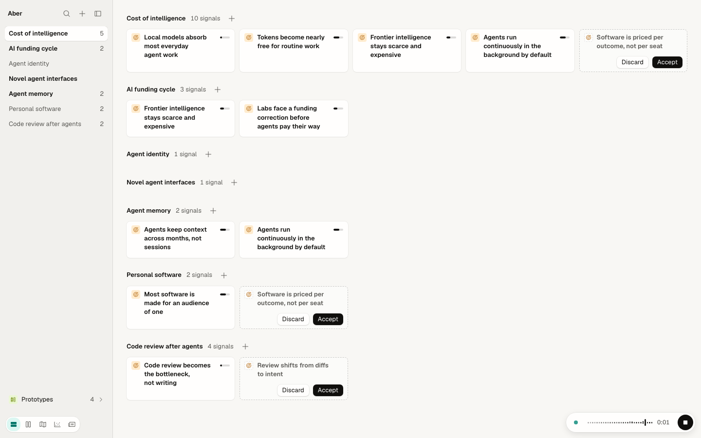

Live, ⌘⇧L raises a Dumps sheet above the pill. The rail's Dumps type already lists the same dumps.
As today: a sheet over whatever you're doing that closes back to where you were. A second list of the same dumps.

One list of dumps. ⌘⇧L selects Dumps and its newest dump; Back returns. Press ⌘⇧L in this window.
Type in the composer and press Return; "will" or "theory" also gets you a draft. Keep or discard drafts, click a row to peek it, or press the crosshair and click a card.
The right edge of the window at full size. Each one is live.
+ at the head of Themes. The new theme is already in the list and fills the main area, with the caret in its name.
Live screenshots are read-only, from the app at 127.0.0.1:5174. Each redesign window beside them is live.






| Part | Live | Redesign | Change |
|---|---|---|---|
| Pill position | Bottom right, 12 from both edges, 40 high | The same | Kept |
| Pill contents | Dump glyph, "Dump or ask", microphone on a round tile | The same, with the microphone as a 28 icon button | Restyled |
| Pill shape | Radius 20 (a capsule), its own shadow | Radius 14, the float shadow (04 floating bar) | Restyled |
| Opening | Click the pill or ⌘J; it grows into the column | The same | Kept |
| Column size and place | 360 wide, 12 in from the top, right and bottom; pushes the view (1208 → 836) | The same | Kept |
| Column surface | White, radius 14, a 0 8 24 shadow | Surface, radius 14, the float shadow | Restyled |
| Closing | A grab handle at the top centre (Close, Esc); Esc; clicking away doesn't close it | The same | Kept |
| Esc order | Discards a take first, then closes | The same, with picking, peeks and the sheet in the stack | Kept |
| My message | Grey bubble on the right, time under it | Sunk bubble (radius 10, card inset), time under it, Delete dump on hover | Restyled; Delete dump improved |
| Voice dump in the thread | A playable bubble (play, wave, length), its transcript under it | The same, with an icon button and the wave in ink 2 | Restyled |
| Agent prose | Plain text on the left, with bold and italic | The same (13 / 1.55) | Kept |
| Filed token | Theme glyph, name, a count badge; unfolds to the gists | The 06 theme chip, a bare count and a caret; unfolds to 06 signal rows that peek | Restyled; peek improved |
| Draft in a reply | Dashed card; pencil, Discard, Accept under it | 06 draft row, dashed; Rephrase (pencil-simple) opens it with the claim editable, then Discard | Keep | Restyled |
| Theory with its evidence | A card, then a Supports / Undermines split | 06 theory row and a ringed split of 06 signal rows | Restyled |
| Objects in replies | Click opens the object | Click grows the 06 peek; Open shows it in the main area, the column stays | Improved (06 rungs) |
| While working | (Streaming text) | "Reading" with the Working spinner; the Dumps rail entry spins (10) | Improved (10, decided) |
| What it sees | Floating pills over the thread's foot ("Theme sections", minus), then the crosshair | The same place and behaviour; the pill is a 06 chip of the object in the main area | Restyled |
| Composer | A hairline, then "Dump anything, or ask", +, microphone, send | The same order and copy; attach is the paperclip (03 vocabulary) | Restyled |
| Send | A grey circle; ink when ready; a "?" speech bubble when asking | A 28 primary: 40% until ready, then ink; paper plane, or a question mark when asking | Restyled |
| Attachments | Chips above the field (globe, host, minus) | The same, with the 03 link glyph | Restyled |
| Recording | Pill or composer becomes the take; discard is a dot or an X; Stop and dump | The same; discard is a labelled trash button | Discard improved (DI-009) |
| Discarding a take | Gone, no Undo | A toast with Undo, which brings the take back as a voice chip | Improved (05 rule 7) |
| A finished dump with the column closed | A toast with what it made | "Made 1 signal" with Undo, just above the pill | Kept (10) |
| History | ⌘⇧L raises a Dumps sheet above the pill: day groups, kind, first line, time, what it made, the bin, X | ⌘⇧L goes to Dumps in the rail; the sheet is dropped | Improved: one list of dumps |
ask() (app/dialogs.tsx:13). The only name check is the browser's required bubble (:40). Cancel is an X beside Create (:44). Picker options end in a chevron that doesn't expand (:38).editable.tsx:16), so you can't cancel one. A blank name saves as blank.